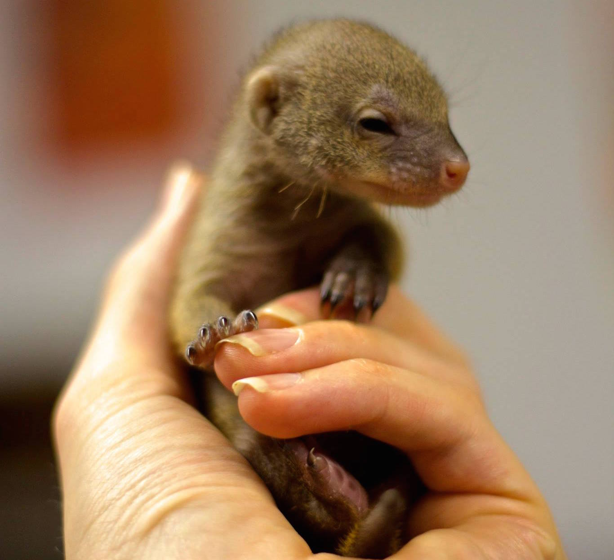
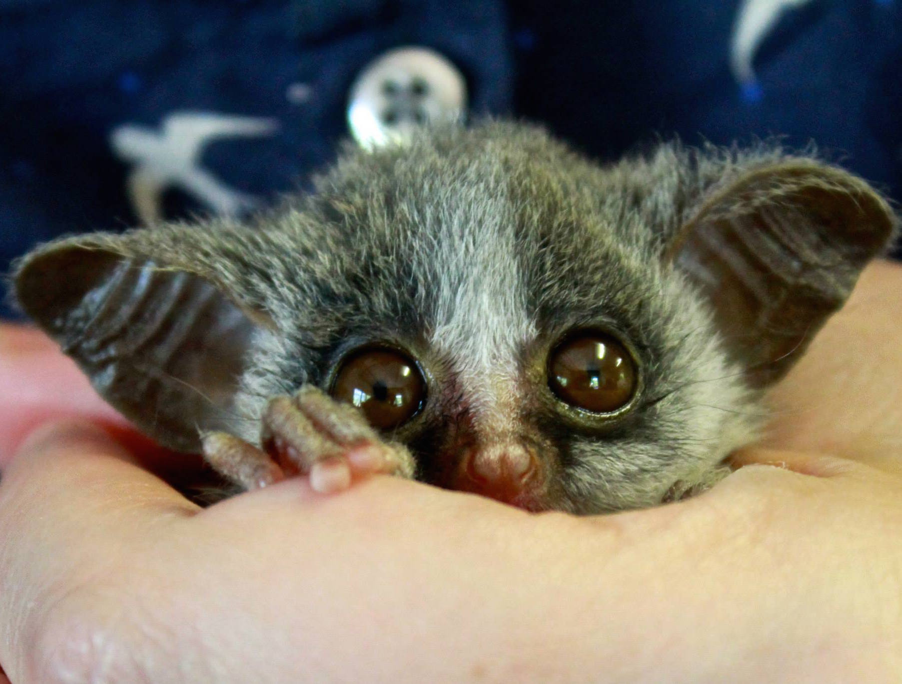
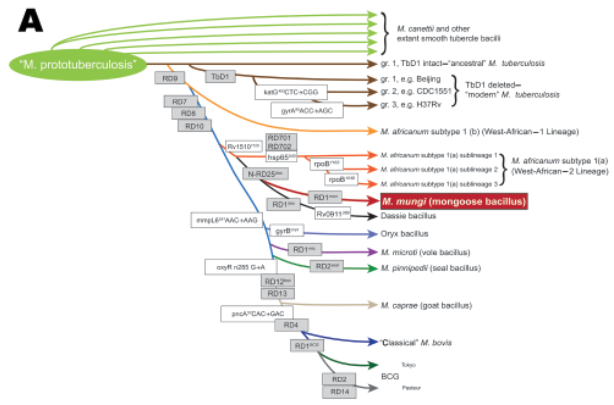
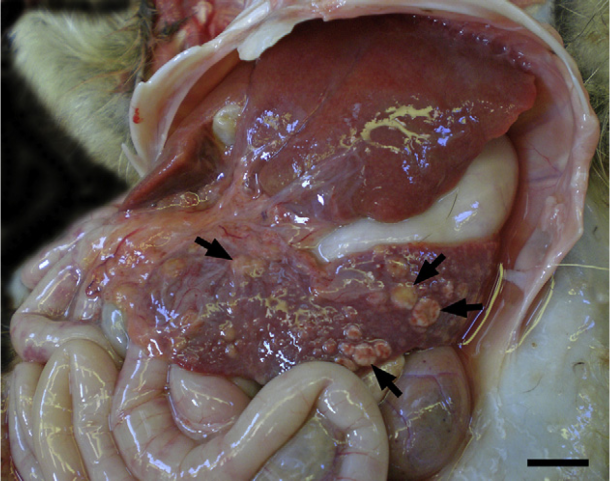
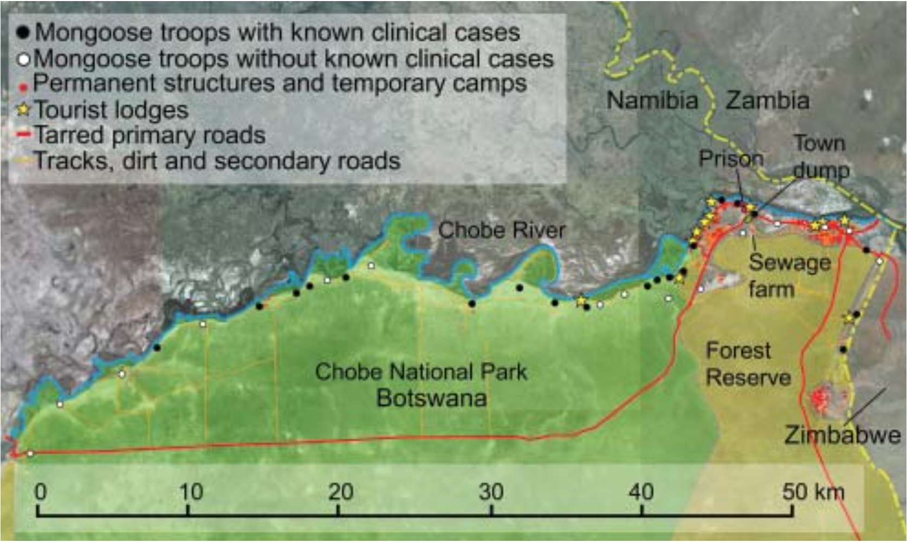
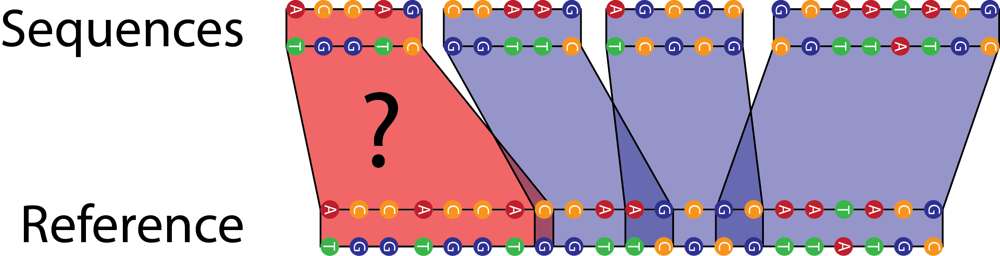
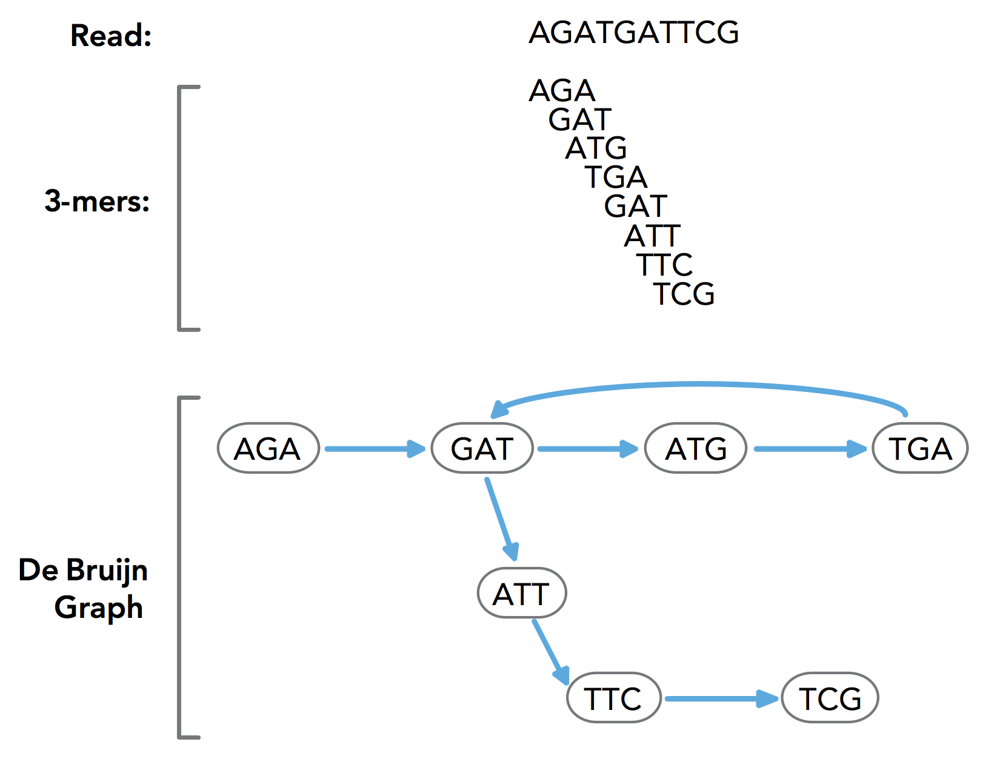
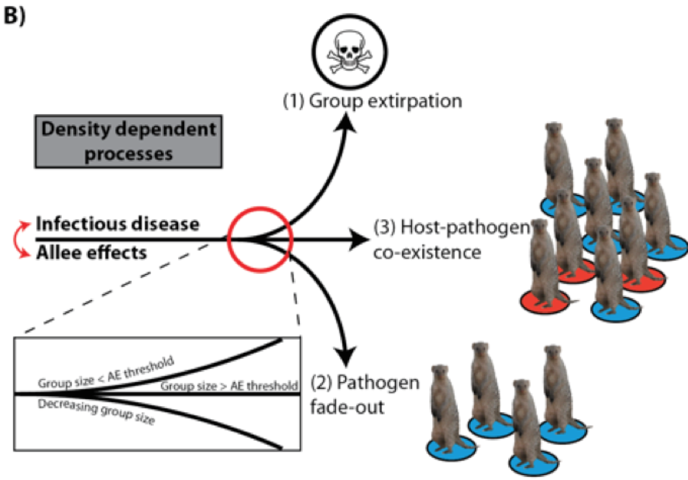

Influ…berculosis?
Christopher Wetherill
Subbiah & Alexander Labs
Influenza and PB1-F2
- PB1-F2 is a protein encoded by an occult alternate reading frame in the PB1 gene segment
- Not necessary for infection and replication, but presence associated with increased virulence; prolonged time to systemic clearance
- Mutations to this protein can increase pathogenicity. Visual hallmarks of necroptisis?
The goal: Figure out how cells are dying in these PB1-F2 mutant flu strains
What actually happened
- Lots of reading
- Lots of planning
- Rescue mutant viruses from plasmids
- Global siRNA screens
- Luciferase assays
- (Fun stuff, right?)
- No lab work 😒
Switching gears to disease ecology


Novel tuberculosis complex pathogen: M. mungi

Novel tuberculosis complex pathogen: M. mungi

Novel tuberculosis complex pathogen: M. mungi

Rotation Goals (redux)
- Everything. (Seriously)
- Identify biomarkers of TB in mongoose
- Assemble a mongoose reference genome
- Normalize database of field observations
- Analyze water quality data
- Directed social network analysis
- Etc.
Identifying putatative TB biomarkers
- We want to design primers against biomarkers of active (and latent?) TB in these mongoose
- We have a list of possible biomarkers, but only house cat genomes to design primers against
- A mongoose reference genome would really be great. Why not assemble one?
Assembling mongoose reference genome

Assembling mongoose reference genome

Directed social network analysis

Conclusions
It was a messy rotation! But…
- Spanned the gamut from molecular virology to wildlife conservation
- Learned a ton about reverse genetics
- Taught and learned more statistics
- Got my feet wet in epidemic modeling; graph theory; social network analysis